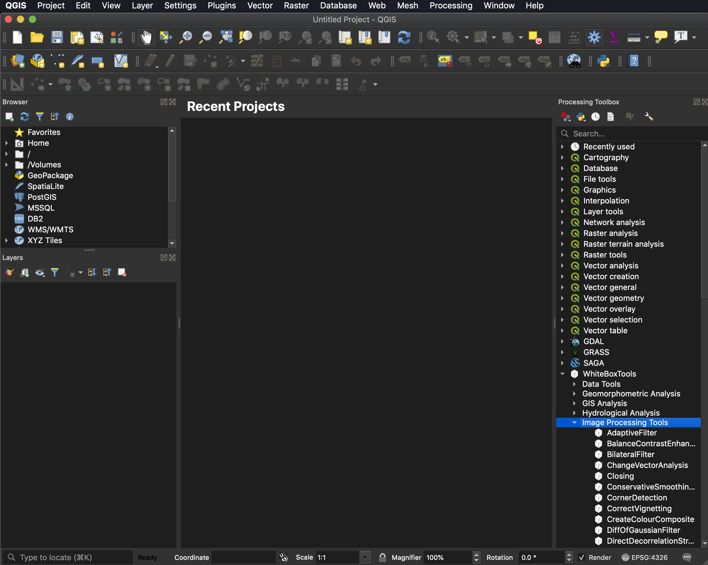
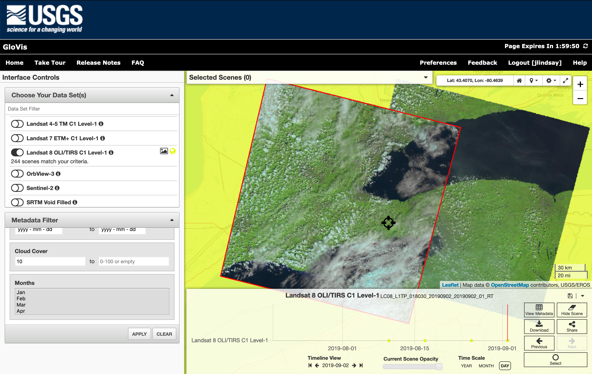
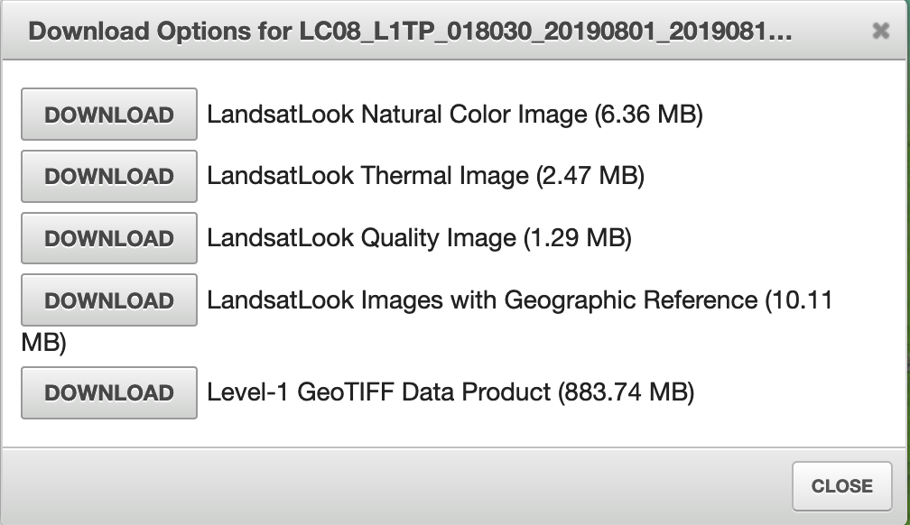
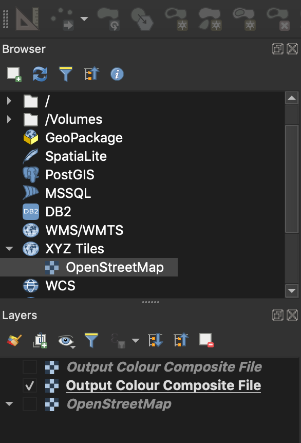
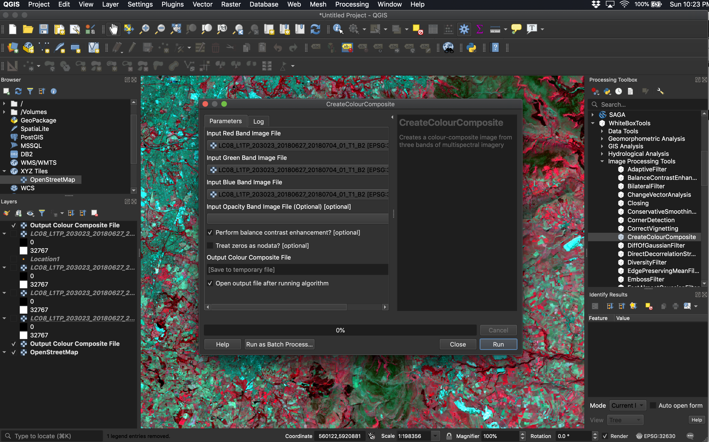

GEOG*2420 The Earth From Space (F19)
Lab Assignment 1
Introduction
The purpose of this lab exercise is to familiarize students with multispectral imagery data sources used in Earth Observation applications, with the creation of colour-composite images, and the use of spatial analysis software for working with these data. This series of lab assignments will require manipulation, analysis, and visualization of several remotely sensed data sets, including satellite images, aerial photography, and LiDAR data. We will be using QGIS as our primary spatial analysis and data visualization software in this class. QGIS is an open-source, cross-platform GIS package with excellent support for data analysis through its numerous plug-in toolboxes. One of the toolboxes that we will rely on throughout this semester is the WhiteboxTools for QGIS plug-in.

Readings and Resources
The following materials, combined with your textbook, can be used as background materials and to help in answering the assignment questions.
Before you begin
IMPORTANT INFORMATION: The computers in the Geography Undergraduate Computing Lab (Hutt 236), have QGIS and WhiteboxTools installed. If you are planning to carry out these assignments on your own computer, then it is important that you have QGIS, with the WhiteboxTools For QGIS toolbox. This software is open-source, freely available, and works on Windows, MacOS, and Linux operating systems. It can be downloaded from the Internet and instructions can be found on the QGIS homepage (link provided above).
In addition to the software, you will need to download the data associated with this lab exercise from the CourseLink page under the Lab 1 directory. The data for this laboratory is quite large and will require substantial data storage. It is advisable that you purchase a USB flash drive to dedicate to this course and to serve as the data backup. It is important that you backup all of the data for the lab assignment.
What you need to hand in
You will hand in a printed report summarizing the answer to each of the questions in the following exercise along with the necessary colour images. Notice that you will need to have paid your lab fee to have printing privileges in the Hutt building computer labs.
Part 1: Acquiring Satellite Imagery
Satellite data can be acquired from a large number of locations, depending on application needs. Before you begin a project involving satellite imagery, you should consider several factors, including: the type of sensor you require (e.g. multispectral imagery, radar data, LiDAR data, etc.), the necessary spatial resolution, temporal factors (e.g. do you need an image for a specific date or time of year?), and your budget for acquiring imagery. There are many commercial providers of satellite imagery and the cost per km2 of data can vary significantly. There also several sources of free satellite imagery, which, depending on your project constraints, may well be suitable.
The United States Geological Survey (USGS) are an excellent source of freely available satellite imagery data. The USGS are responsible for storing and disseminating many of the archived datasets from NASA satellites. There are two online data portals that the USGS currently operate to disseminate publicly available imagery, including the Global Visualization Viewer (GloVis) and EarthExplorer. Visit the USGS Global Visualization Viewer web site at http://glovis.usgs.gov/

This is an excellent example of an online data warehouse for satellite imagery. Like many of these sites, you need to register before you are able to download the available data. We will not need to do this at the moment because even without registering, the site will allow users to examine historical and recently acquired images and assess their quality.
Examine each of the data sets that are available under the ‘Choose Your Datasets' tab. Not all of these data are available free-of-charge, and not every data set is available to users outside of the U.S., but many are. If you click on the ‘View Data Set Information’ link from within the sub-menu of any of the data sets, you'll be able to see what data are available at no charge. The more interesting data sets include the ASTER, EO-1 ALI, EO-1 Hyperion (hyperspectral data), and the various available Landsat 5 TM, Landsat 7 ETM+, and Landsat 8 Operational Land Imager (OLI) collections. Select the Landsat 8 OLI/TIRS C1 Level-1 data set. Now navigate to the Guelph area. Select the image tile that contains Guelph and most of the Greater Toronto Area. You will be able to view all of the images available in this collection corresponding with this location, scrolling through the timeline of acquisition dates at the bottom of the map. Notice that the image ID, scene cloud cover (CC) percentage, and date are given for each image under 'View Metadata'.
To download a Landsat scene for a particular date, you would need to sign-up for a user account with GloVis, select a particular scene and date, select 'Download' and choose a download option (See below). There are several options to download various colour composite images, as well as the complete multispectral data set (containing one image for each band of data), at nearly 900 MB and in GeoTIFF data format.

The US-operated satellites are not the only source of remotely sensed imagery. Notably, the European Union also operate a number of earth observation satellites, including the Sentinel 1 and Sentinel 2 satellites, which provide fine-resolution data (up to 10 m) freely. Like the Landsat program, the Sentinel program provides valuable data for many types of remote sensing applications.
Questions for Part 1
1.1. How many bands of data are contained in one scene of Landsat 8 imagery? (1 mark)
1.2. What is the world reference system (WRS) path (i.e. column) and row number of the Landsat scene containing Guelph? (1 mark)
1.3. How many Landsat 8 images for the Guelph-containing scene have had between 0% and 10% cloud cover in 2019? Using the metadata, what is the difference between Land Cloud Cover and Scene Cloud Cover? Describe the impact that cloud cover has on the images. (4 marks; marks will be allocated by the quality of answers).
1.4. Examine the images taken on 2015/02/27 and 2017/06/08 (i.e. scroll to each date using the 'Previous' and 'Next' buttons). Describe how each image appears and how they differ from one another. (4 marks)
1.5. Do you think that the preview images displayed in the GloVis web portal are natural colour composite images? Why or why not? (2 marks)
1.6. What do you think are the major advantages and disadvantages of the GloVis web portal for retrieval of satellite data sets? (6 marks)
Part 2: Multispectral Imagery Data
In this course, we will be manipulating and analyzing remotely sensed data using QGIS. See the Before you begin section of the introduction for more details.
After you have downloaded the data associated with this lab assignment from the CourseLink page, decompress (unzip) the data into a working directory that you have created to dedicate to this assignment. Open the contents of this folder and examine the files contained within. These data are the multiple bands, in GeoTIFF image format, of a Landsat 8 scene.
In the field of remote sensing, the word band refers to a single image contained within a multispectral or hyperspectral data set. A band corresponds to a single, usually narrow, region of the electromagetic spectrum. Band images are usually greyscale and display information about the relative brightness of the earth's surface at the pixel site across the range of wavelengths associated with the band. For example, in a Landsat 8 band 3 image,a bright white pixel corresponds to a surface material that is reflecting a significant amount of radiation in the 0.525 to 0.600 µm band of wavelengths, which the human eye interprets as green light. A dark coloured pixel, by comparison, would indicate that not much green light is being reflected by that surface material. Some bands within multispectral data sets are associated with regions of the spectrum that fall outside of the visible region (e.g. near-infrared, shortwave infrared, and thermal infrared). Interpreting the relatively brightnesses of pixels within multiple band images can tell you a great deal about the nature of the surface at those sites. This is the basis of multispectral remote sensing data analysis.
Now open the metadata file LC08_L1TP_203023_20180627_20180704_01_T1_MTL.txt using a text editor such as Notepad or TextEdit. This file contains a wealth of information describing the acquisition details and processing that has been carried out on these data. You will likely want to drag the OpenStreetMap layer to the bottom of the map stack so that the imagery is on top.
2.1. What proportion of the land contained within the scene was covered with clouds at the time of acquisition? (1 mark)
2.2. What date was the image acquired on? What are the path and row numbers of the scene? (3 marks)
Open QGIS and add each of the four raster layers (TIFF files) to the map. Now add an OpenStreetMap basemap layer to provide a geographic context for the Landsat images (select OpenStreetMap under XYZ Tiles). While the file names of these four images are quite long, the last number indicates which band of Landsat data the image corresponds with (e.g. LC08_L1TP_203023_20180627_20180704_01_T1_B2.tif is 'band 2'). These four images are bands 2 to 5 of a Landsat scene, that originally contained the complete imagery data set.
2.3. Describe the geographic location of the scene. (1 mark)
2.4. What parts of the spectrum do each of bands 2, 3, 4, and 5 of Landsat 8 data record? (4 marks)
2.5. Which of the bands appears to be overall brightest over the land and which appears to be darkest? Why do you think that that is the case? (4 marks)
2.6. Which of the bands shows the least detail in the turbid water near Liverpool and which exhibits the greatest detail? Why might this be? (4 marks)
2.7. Overlay the vector file 'Location1.shp'. Describe what you think is happening in the image at this location and provide evidence of your conclusions. Why is the phenomenon less apparent in band 5 than the other three bands? (5 marks)
Now, open the CreateColourComposite from the WhiteboxTools toolbox and the Image Analysis folder. Create a natural colour composite image by inputting the red, green, and blue bands into the appropriate inputs on the tool dialog. You may leave the Image Opacity Band blank. Call the output image 'NaturalColour.tif' and be sure to save it into the same working directory containing the rest of the lab data. Run the tool; if the image is not automatically displayed after it has completed, display the image. Also create a near-infrared false-colour composite image by inputting the near-infrared band into the red input, the red band into the green input, and the green band into the blue input. Call the output image 'FalseColour.tif'.

Include both colour-composite images with your assignment write-up. (2 marks)
2.8. Do you think that these imagery would be useful for mapping streets in urban areas? Why or why not? (As always, you must provide justification for your answer) How useful would these data be for mapping land cover/land use, e.g. distinguishing urban areas from surrounding agricultural lands, and forests from water, etc. (6 marks; marks will be assigned based on the quality of answers and demonstrated insight.)
2.9. Which of the two colour composites would be more useful for vegetation mapping applications? That is, in which of the two images is vegetation more apparent (i.e. brightly coloured)? Provide evidence to justify your answer. (2 marks)